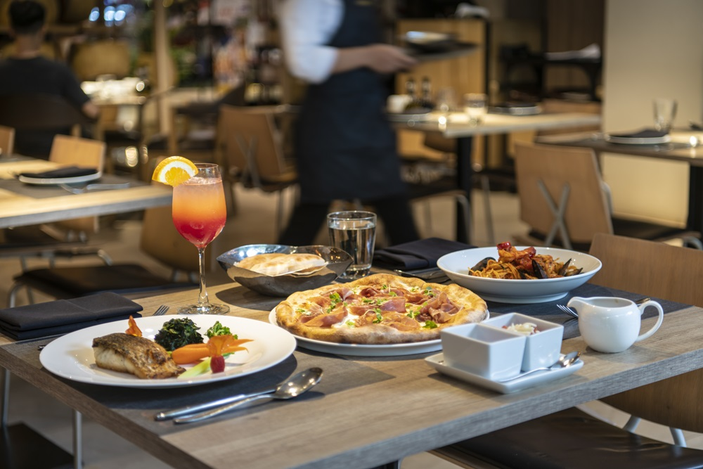
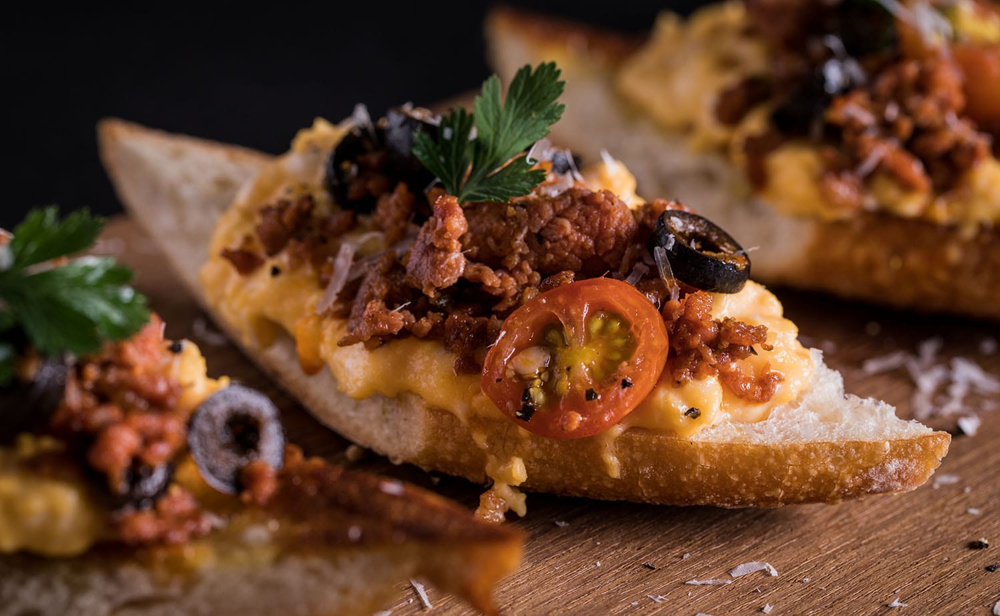
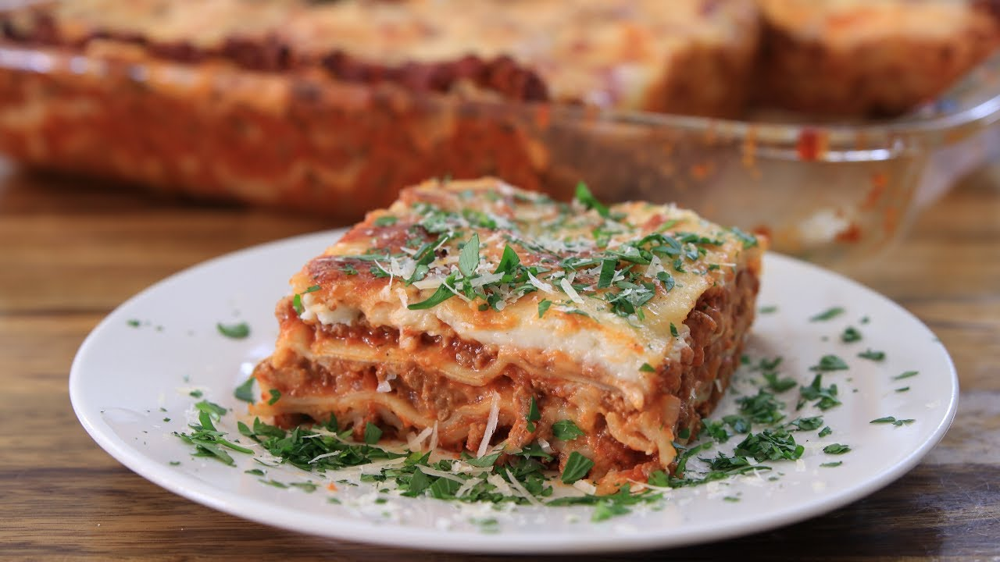
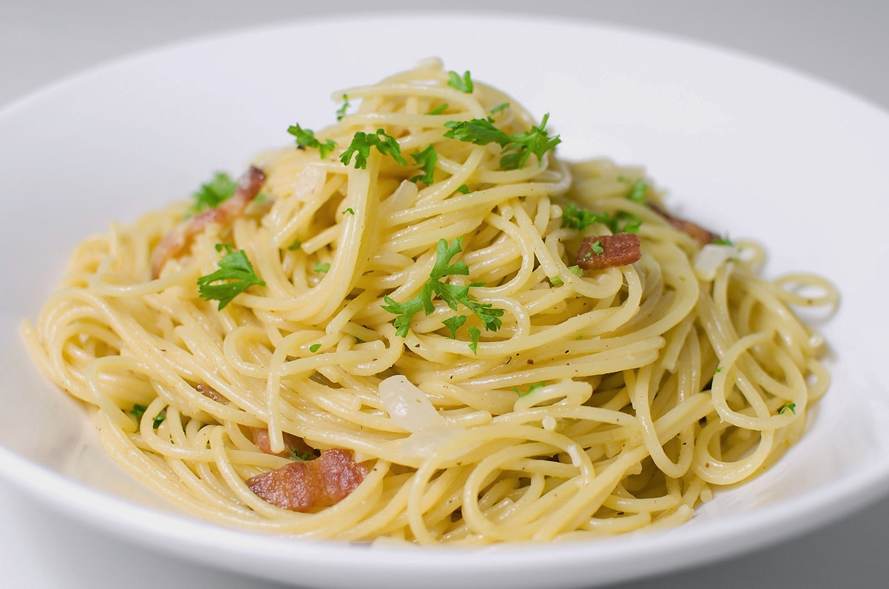
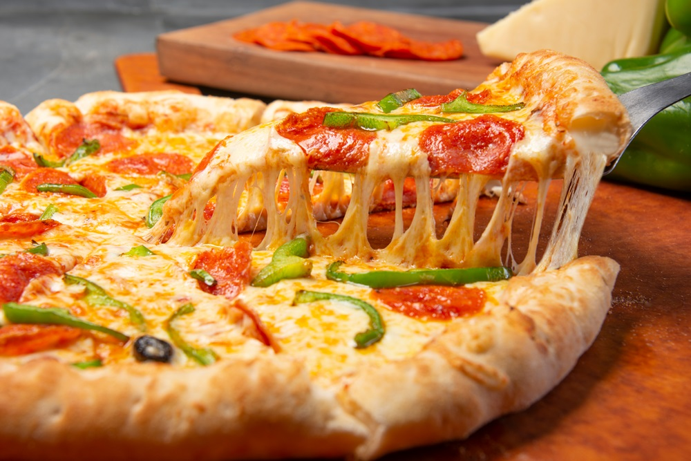
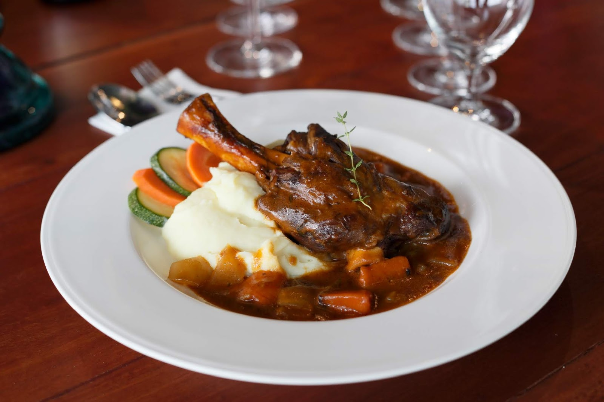
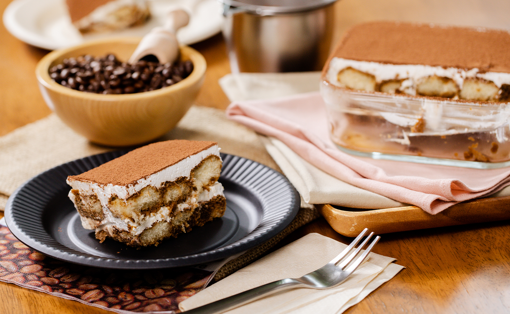

อิตาลี ||
ประวัติของอิตาลี ||
อาหารที่ชอบ ||
สถานที่ท่องเที่ยวในอิตาลี ||
อาหารดังที่ชอบ
อาหารอิตาเลียน เมนูสูตรดั้งเดิม ที่มีมากกว่าแค่ พิซซ่า ที่แนะนำจาก Hungry Hub แต่ละเมนูก็มีขั้นตอนและเอกลักษณ์ที่แตกต่างกันออกไปซึ่งบางเมนูอาจไม่เป็นที่นิยม หาทานได้ยากในไทย ส่วนบางเมนูเราอาจคุ้นเคยหรือรู้จักกันแพร่หลายแล้ว สุดท้ายนี้ถ้าเพื่อน ๆ คนไหนมีโอกาสได้ไปเจอเมนูอิตาเลียนหายาก หรือมีร้านประจำที่อร่อย ก็อย่าลืมแชร์หรือแนะนำบอกพิกัดให้เพื่อน ๆ ได้ไปลิ้มลองกันนะ

บรูเชตตา (Bruschetta)

ลาซานญา (Lasagna)

พาสต้า คาโบนาร่า (Pasta Carbonara)

พิซซ่า (Pizza)

ออสโซบูโก (Ossobuco)

ทีรามิสุ (Tiramisu)